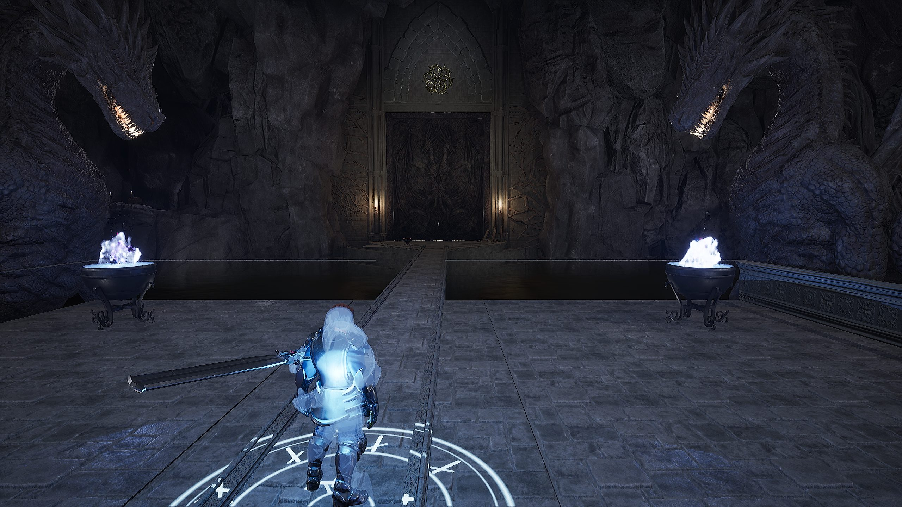

Sentinel
Sword and shield. Balanced. Start here.
A disgraced Guardian of the shield-line, fighting to reclaim an honor nobody else remembers.
Shield Wall blocks and reflects. Ground Slam staggers everything nearby.

The seal is broken. The Veil remembers.
A souls-like action RPG about the one Guardian who ran, and the realm that is unraveling because of it. In development for PC.
Get release newsCreatures go feral without cause. Crops rot in a single night. Far to the east the sky has turned a deep, wrong shade of purple, and every season it creeps a little closer.
They call it the Unraveling. The old prayers name the thing behind it the Veilborn: a formless hunger that moves through corruption and possession, wearing the bodies of the fallen. Knights, mages, heroes. It prefers the ones who were good once.
You arrive in Hearthholm from across the Sea of Glass, a stranger with a Guardian's bearing and nothing to say about where you came from. The town needs help. The road east needs walking. And the fallen heroes waiting at the end of it seem, somehow, to know your name.
You opened it once, brother. Do you remember the sound?
The story is not told to you. It is recovered, piece by piece, from lore, from memory, and from the people who knew you before you fled. The order that once held the seals is gone; what is left of it waits for you one Guardian at a time, each consumed by the Veil, each carrying a piece of what happened. Solve it early and you may find you were wrong about which sin it was.
Seven regions curled around the Sea of Glass, walked border to border. Hearthholm in the west still knows sunlight. The Veil's Edge no longer knows what sunlight is.
The hometown hub. Warm, safe, and cracking at the edges. A market, a forge, the Broken Antler tavern, a chapel that knows more than it says, and a gate that opens onto everything else.
A dark, corrupted forest and the first true zone. The trees remember what burned.
Mountain fortresses and what remains of the Guardian order. The Vault of Oaths is up there somewhere, and so is something that was never a Guardian at all.
An underground seal site beneath the forest. Water, stone, candle wax, and things that should have stayed bound. This is where the current build lives.
A wasteland crossed by the Bone Road. The turning point of the whole story waits on the far side.
A village that no longer exists, across the water you swore you would never cross again.
Reality is coming apart here. The last seal is at the center of it, and so is the truth.
Guardian Watchfires mark the road: old signal braziers you relight to rest, level, attune spells, and travel. Lighting one plays a single held note. You will hear that note again. Off the road, a dragon, a giant, and a leviathan each guard a place you are not required to go.
Every class starts at level five with the same points spent in a different shape. You can respec, but it returns you to your class floor, so the shape you choose is a real commitment.
Sword and shield. Balanced. Start here.
A disgraced Guardian of the shield-line, fighting to reclaim an honor nobody else remembers.
Shield Wall blocks and reflects. Ground Slam staggers everything nearby.
Sword and dark magic, hybrid.
Touched by the Veil and turning its power back against it. A Hexblade with no mana is still a Hexblade.
Veil Step is a short teleport dodge. Cursed Strike hits and leaves something behind.
Two-handed hammer. Slow, punishing, highest poise.
Oathbound siege-guard of Ironhold. Served the Guardians without ever being one.
Unbroken Line plants you and cannot be staggered. Gatebreaker breaks any guard.
Fragile, high-damage caster.
A scholar who decoded the Veil's language and wishes, most days, that they hadn't.
Arcane Barrier absorbs one hit. Chain Hex bounces between targets.
Combat is precise and unforgiving in the way the genre demands. Parry windows are tight. The dodge roll is free and carries real invulnerability frames. Poise decides who staggers. Stamina is spent on blocks and braces, never on getting out of the way.
Kills yield Embers, carried unbanked until you reach a Watchfire and spend them to level. Die and you drop every Ember where you fell. Die again before you get back and they are gone for good.
Fifty spells across two schools sit in attunement slots that grow with the story. Class abilities are separate: always available, never lost. And Hearthholm's people keep their own timelines. Their windows close diegetically, not on a clock. An empty wagon yard is how you find out.


Captured from the current pre-alpha build. Everything is subject to change.
The focus right now is the first dungeon, the catacombs under the Sunken Sanctum, and making the core combat loop feel right before anything else is built on top of it.

One email when there is something worth seeing: a trailer, a playable build, a release date. Nothing else.